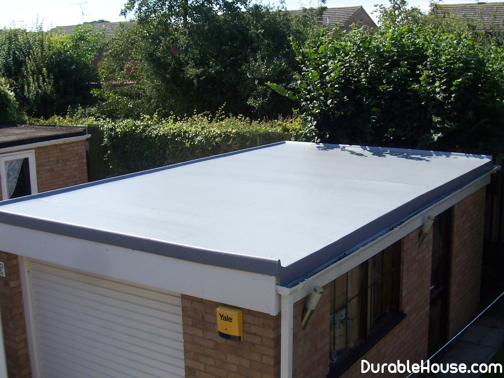

Flat roof
Flat roofing types
Traditional
It is a "pie" consisting of a bearing plate with a vapor barrier applied to it, which is laid insulation. On the insulation is made a mortar with a razuglonkoj, and on this screed is applied with a waterproofing protective carpet made of roll materials.
Inversion
This is an alternative constructive solution to the traditional flat roof. The difference is, that the layer of insulation is not located under the waterproofing carpet, but above it. This the design allows to protect a waterproof carpet from destructive influence UV rays, sudden temperature changes, freeze-thaw cycles, and mechanical damage. All this increases the service life of such a roof in comparison with traditional soft roof.
The slope of the inversion roof is recommended to be arranged at an angle of 2.5-5%. If the surface it is covered with a layer of gravel, melt and rainwater through the gravel layer flows down through filter material and flows down the carpet of waterproofing to specially equipped drainage devices.
Features of insulation
The base of the flat roof is a load-bearing slab, reinforced concrete, monolithic or from a profiled sheet. On top of it is a vapor barrier material, then a layer of thermal insulation.
There is a one- and two-layer system of thermal insulation of a flat roof, the latter is used more often: the lower layer thickness of 70-200 mm takes on the basic thermal insulation function, the top layer thickness of 30-50 mm is responsible mainly for the redistribution of mechanical stress and it is characterized by high compressive strength and density. This "specialization" of the layers "Pie" flat roof can significantly reduce its weight and, accordingly, the load on the overlap.
Ventilation device
Water vapor, which is constantly formed in the premises of the house, due to diffusion and convective the process rises upward and, by cooling, condenses in the under-roof space, especially in the winter. Overabundant condensation leads to wet spots and mold on walls and ceiling, and excess moisture, accumulating in heat-insulating material, reduces it properties.
Cope with the condensate can roofing fans (aerators), special pipes of various diameters of metal or plastic, covered with caps on top in the shape of umbrellas.
The principle of the aerator is based on the difference in pressure caused by air currents. Him the design allows moisture vapor to freely flow out from under the roofing carpet, without damaging the latter and preventing the formation of bubbles and flaking of the roofing material.
On flat roofs of a simple configuration, aerators are placed evenly over the entire area in the highest points of the roof plane in the places of joints of heat-insulating plates. Their install better when installing the roof itself.
There are houses consisting of only one roof, the so-called pyramids. A there are houses where there is no roof, or rather, its usual pitched shape is missing.
the overwhelming part of all projects of country houses assumes use of old kind technology pitched roof in the form of the letter "A". But is it really necessary?
In Germany and switzerland has long been in fashion projects of individual buildings with a flat roof. Projects even use as a coating of the same metal, placed under the a small angle of 5-7%. Thermal insulation fits very simply.
Steam insulation
Before conducting the measures for vapor barrier it is necessary to wait until the screed and the dissolution
completely dry, otherwise the increased humidity and related problems you get in
the very beginning of the roofing.
It is necessary to install all engineering equipment,
requiring mechanical fastening. For example, to fix to the bearing plates rainwater funnels,
compensators for expansion joints, branch pipes for the passage of engineering equipment, anchor
bolts.
If on the surface of the screed after the rain there are puddles - this is the first signal that,
that the measures taken to arrange the deviations were not carried out correctly, the roof should already be
work. In any case, excess water should be removed (manually with rags or a vacuum cleaner - this is
someone as it will), and dry the roof.
Steam insulation is a reinforced
fiberglass bitumen-polymer membrane or vapor barrier film, which is laid
over the screed, and at the edge of the roof, wind up on a vertical plane to a height greater than
height of insulation. The seams are glued with special tape or sealed. Main Function
vapor barrier - protection of the insulation against water vapor coming from inside the house, prevention
its wetting, bloating and guaranteeing the preservation of all the original properties. This happens
because in buildings with a flat roof, as a rule, under the reinforced concrete slab there are always warm
premises. That is, under the roof is always a "+", and over the roof a few months in a year
the temperature is always lower, and with the sign "-".
It goes without saying that if
the dissection is carried out with the help of heat insulation plates, then the vapor barrier is laid before them.
Heater
Insulate flat roofs with virtually any insulation. There are types of heaters
for flat roofs and for producers of mineral wool, foam and, of course,
extruded polystyrene foam. Which one is more suitable - difficult to say, often
the best is the one that is more correctly laid.
But, for example, for warming
only non-hygroscopic materials capable of preserving
high thermal insulation characteristics in a moist environment - extruded foams with
closed pores, close to zero water absorption, good heat-shielding
characteristics in a humid environment and sufficient strength.
The thickness of the layer of insulation
depends on the type of flat roof you choose, the thickness of the substrate and the material from which
it is executed.
Waterproofing
Currently, the market for roofing waterproofing materials is:
-
rolled materials based on polyester, fiberglass or bitumen, modified
polymers;
- polymeric membranes;
- bitumen and asphalt mastics;
-
materials based on liquid rubber.
Rolling materials
The main part of the roofing materials market for flat roofs is occupied by roll products. it
far from that ruberoid of the period of industrial housing construction, and modern
high-tech materials from modified bitumen.
Modified by polymers
bitumen roofing materials are characterized by increased resistance to atmospheric
effects, and consequently, a longer one - 20-25 years and even more - a service life.
most often, styrene-butadiene-styrene (SBS) and atactic
polypropylene plastic (APP). These modifiers have specific properties. APP
gives the roof a resistance to ultraviolet radiation, and SBS - plasticity, which
it is especially important for large temperature differences. It is obvious that for climatic conditions
most European countries, including Belarus, are more suitable
SBS-modified roofing materials.
Polymer membranes
In addition to bitumen-polymer roll materials, polymer rolls
materials, for which the term "roofing membranes" is firmly entrenched. It is worth noting that
some other roofing materials are often called membranes. It's connected with
borrowing the term from Western technical literature, where all roofing rolls
materials are called membranes.
Polymer materials form two main groups,
differing in technical and operational characteristics: elastomers and thermoplastics.
the elastomers used in the manufacture of roofing materials include manufactured
from ethylene-propylene-diene-monomer, and to thermoplastics - from
PVC.
Polymer membranes are characterized by higher strength and durability than
bitumen-polymeric materials, elasticity, good resistance to atmospheric phenomena,
oxidation and exposure to ultraviolet rays, as well as frost resistance. However, polymeric
membranes, as a rule, are 20-30% more expensive than bitumen-polymer materials.
Distinctive
the feature of polymeric materials is the large width of the membranes. Thanks to this, you can
choose the best option for buildings of all sizes and configurations and thereby reduce
number of joints and seams.
Aerators
Water vapor, as already mentioned, is a danger to thermal insulation, so from the side
its bases are covered with a layer of vapor barrier. Meanwhile, even a reliable vapor barrier is not
guarantees 100% protection from steam, it penetrates through it, but in that amount,
which layer of a heater is able to pass through itself.
Further density
waterproofing coating does not allow it to evaporate, and it accumulates in the insulation. AT
as a result, the latter loses thermal insulation properties, and on the ceiling of the premises appear
wet spots. In addition, the accumulation of moisture causes swelling of the waterproofing carpet. Water,
freezing at negative temperatures and increasing in volume, tears the waterproofing from
grounds. Temperature changes and mechanical stresses lead to the formation of cracks, and
the roof begins to leak. To avoid these troubles, it must be done
"breathing". To do this, install aerators - special devices made of metal or
plastic pipes of different diameters, covered with caps in the form of umbrellas. Aerators evenly
distribute over the entire area of the roof, choosing for them the highest points. These devices
work due to the difference in pressure created by airflows, and output excess
wet vapors from the under-roof space, preventing the formation of bubbles and flaking
roofing material.
Gutter
For these funnels, heating is also provided so that they do not freeze in winter. Slopes by
outward direction, to the perimeter of the building, allow to discharge water through downspouts,
fixed on the walls of houses.
Since the flat roof has a slope, with a rain drain
water problems do not arise, but it still has to go somewhere - we need to arrange a drainage system.
it can be unorganized and organized. In the latter case,
internal, and external drainage.
Internal drainage in an individual
construction is rarely practiced due to the complexity of the device, unnecessary heat loss and
the need to "hide" an additional riser. Often organized is the outer,
more familiar with both the device and the further operation.
A characteristic feature
arrangement of gutters of flat roofs is the location of gutters.
a predetermined divergence determines the location of their installation (as a ladder in a shower room). In places
slope on the roof surface have rainwater funnels, which are completed
special baskets, catching various garbage. Funnels for the internal gutter
put about in the center of the roof, having drainpipes inside the building, funnels for
outdoor drainage are installed in the parapets. That the water near the funnels is not frozen, but
freely merged into the pipe, around it on the plosha 1 m2 with the help of cable systems perform
heating of the roof. And for the year-round operation of internal gutters, their risers are
the entire length) in the heated zone. The cable is laid in and inside the outflow tube of the outer
drainage. Removal of the pipe should be sufficient so that the water from the roof does not fall on the facade
at home.
In this case, you can be sure that the icicle will only appear in the winter
on the "programmed" you site. Predictability is better than spontaneity, because it means,
that you can identify the dangerous places around the house, and this will protect against accidental
injuries.
Drains are a kind of indicator of care for the roof. That is, it is periodically necessary carry out an inspection of spillway funnels, clean them of dirt, leaves, ice, carry out in time repair or replacement.